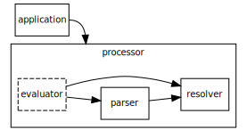
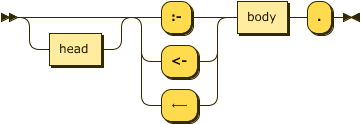
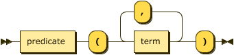
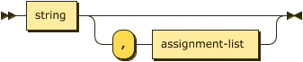

Datalog Text Representation
Version: XX March 2022 (Draft)
Please check the errata for any errors or issues reported since publication.
The English version of this specification is the only normative version. Non-normative translations may also be available.
Abstract
This document defines a standard textual representation of a Datalog program. This allows a program to be completely written in a compact and natural text form, with abbreviations for common usage patterns and data-types.
Status of This Document
This section describes the status of this document at the time of its publication. Other documents may supersede this document.
Introduction
How to Read This Document
This section is non-normative.
TBD
Contributing
This section is non-normative.
The content for this site is generated from a GitHub repository. Discussions, comments, and errata are hosted on the specification GitHub repository’s discussion section.
Terminology
This section is non-normative.
- Media Type – This specification describes an Internet Media Type RFC1590 that is used “in order to provide open and extensible data typing and type negotiation” – from RFC2616, section 3.7.
- Program – A complete Datalog entity that may be serialized into a resource in a particular representation.
- Representation – “An entity included with a response that is subject to content negotiation, as described in section [removed]. There may exist multiple representations associated with a particular response status.” – from RFC2616, section 1.3.
- Resource – “A network data object or service that can be identified by a URI, as defined in section [removed]. Resources may be available in multiple representations (e.g. multiple languages, data formats, size, and resolutions) or vary in other ways.” – from RFC2616, section 1.3.
Using these terms this specification describes a particular representation of a Datalog program, whose type is identified by a unique media type, that may be serialized into a resource for storage or transfer.

- Application – This denotes some software component that requires the ability to download, read, and act upon Datalog resources. To accomplish this the application has to interact with the processor.
- Processor – A software component that provides at lease the parser and resolver and commonly the evaluator as well.
- Parser – The subcomponent that actually parses the resource, validating syntax and well-formedness rules.
- Resolver – The subcomponent that has to resolve and make available any referenced external resources.
- Evaluator – The subcomponent that consumes the parsed program and entails intensional facts from rules.
Using these terms this specification describes the requirements of the parser to correctly produce some representation of the program provided to it, and also the resolver requirements for retrieving external resources.
Datalog Naming Convention
When we talk specifically about the Datalog language it is common to represent it in a roman serif face as $\small\text{Datalog}$. This allows the distinction of talking in general about Datalog in the abstract vs. the actual semantics of the language $\small\text{Datalog}$.
This core $\small\text{Datalog}$ language has many documented extensions that provide additional flexibility, conciseness, or expressiveness. These languages, sub-languages, extensions, or dialects are usually labeled by adding a superscript symbol that identifies the specific extension. For example, $\small\text{Datalog}^{\lnot}$ is the language extended with negation of literals, $\small\text{Datalog}^{\Gamma}$ is the language extended with type checking on attributes, and $\small\text{Datalog}^{\lnot,\theta}$ is the language extended with negation of literals and arithmetic literals. The order of superscript symbols is irrelevant.
| Language | Introduces | Symbols |
|---|---|---|
| $\small\text{Datalog}^{\lnot}$ | negation of literals in rule bodies | !, NOT, ￢ |
| $\small\text{Datalog}^{\lor}$ | disjunction in rule heads | ;, OR, ∨ |
| $\small\text{Datalog}^{\bot}$ | rules as constraints, i.e. no body | N/A |
| $\small\text{Datalog}^{\Gamma}$ | typed attributes for relations | N/A |
| $\small\text{Datalog}^{\theta}$ | arithmetic literals in rule bodies | =, !=, ≠, <, <=, ≤, >, >=, ≥, *=, ≛` |
| $\small\text{Datalog}^{\rightarrow}$ | functional dependency processing instruction | -->, ⟶ |
When referring to the specifics of the language we will use the common format $\small\text{Datalog}$ with superscripts as necessary to identify specific language extensions being used.
Conformance
As well as sections marked as non-normative, all authoring guidelines, diagrams, examples, and notes in this specification are non-normative. Everything else in this specification is normative.
The keywords MAY, MUST, MUST NOT, RECOMMENDED, SHOULD, and SHOULD NOT in this document are to be interpreted as described in BCP 14 RFC2119 RFC8174 when, and only when, they appear in all capitals, as shown here.
A conforming Datalog resource is a Unicode string that MUST conform to the grammar and additional constraints defined in section 1.4. Datalog Text Grammar, starting with the program production.
A conforming Datalog parser MUST ensure the resource it is provided is a conforming Datalog resource, signalling error conditions specified herein. Additionally, a conforming resolver MUST be able to convert paths to URIs RFC3986 and retrieve the identified resource on behalf of the parser.
Media Type and Content Encoding
The media type of Datalog text document is application/vnd.datalog+text. The content encoding of a Datalog text document is always UTF-8. For complete details, see appendix IANA Considerations.
features Parameter
The optional “features” parameter allows the transport to identify language features used within the representation. The value of this parameter is a comma-separated list of feature identifiers supported by this specification. If this parameter is specified more than once it’s values MUST be aggregated into a set, removing duplicates.
Therefore, the type application/vnd.datalog+text;features=negation denotes a document with the following processing instruction.
.features(negation).
The purpose of this parameter is to save a client from having to parse a document if the features identified in the parameter are unsupported by them.
dialect Parameter
The “dialect” parameter identifies the tool which generated the document, there are some existing tools with extensive usage that deviate from this core specification. An initial set of identifiers is included in the non-normative Dialect Identifiers.
If this parameter is specified more than once, the first value MUST be used and any subsequent value MUST be discarded.
Processing Instructions
Once a resource has been accepted for parsing it MAY include one or more processing instructions that need to be executed before the handling of actual program data. These processing instructions, while not a part of the program per se, MAY alter the behavior of the program and MUST be handled by any parser.
Basic Concepts
A Datalog Program $\small P$ is a tuple comprising the Extensional database, EDB, or $\small D_{E}$, the Intensional database, IDB, or $\small D_{I}$, and a set of queries $\small Q$.
$$\tag{0}\small P=( D_E, D_I, Q )$$
The extensional database in turn is a set of relations each of which is a set of facts (ground atoms). The intensional database is a set of rules that derive additional facts into intensional relations via entailment.
Every relation $\small r$ has a schema that describes a set of attributes $\small \lbrace \alpha_1, \ldots, \alpha_j \rbrace$, and each attribute may be labeled, and may also have a type. In general, we refer to attributes by index, a value in $\small 1, \cdots, j$.
Datalog Rules $\small R$ are built from a language $\small \mathcal{L}=( \mathcal{C},\mathcal{P},\mathcal{V})$ that contains the
- $\small \mathcal{C}$ — the finite sets of symbols for all constant values; e.g. hello, “hi” 123,
- $\small \mathcal{P}$ — the finite set of alphanumeric character strings that begin with a lowercase character; e.g. human, size, a,
- $\small \mathcal{V}$ — the finite set of alphanumeric character strings that begin with an uppercase character; e.g. X, A, Var.
Atoms are comprised of a label, $\small p \in \mathcal{P}$, and a tuple of terms. A set of atoms form a Relation if each conforms to the schema of the relation. The form of an individual atom is as follows:
$$\tag{ix}\small p(t_1, \ldots, t_k)$$
Terms, mentioned above, may be constant values or variables such that $\small\mathcal{T}=\mathcal{C}\cup\mathcal{V}\cup\bar{t}$ where $\small\bar{t}$ represents an anonymous variable.
Literals within the body of a rule, represent sub-goals that are the required to be true for the rule’s head to be considered true. A literal may be an atom (termed a relational literal) or, in $\small\text{Datalog}^{\theta}$, a conditional expression (termed an arithmetic literal),
Any ground rule where $\small m=1$ and where $\small n=0$ is termed a Fact as it is true by nature of having an empty body, or alternatively we may consider the body be comprised of the truth value $\small\top$.
An atom may be also used as a Goal or Query clause in that its constant and variable terms may be used to match facts from the known facts or those that may be inferred from the set of rules introduced. A ground goal is simply determining that any fact exists that matches all the constant values provided and will return true or false. In the case that one or more variables exist a set of facts will be returned that match the expressed constants and provide the corresponding values for the variables.
Datalog Text Grammar
A Datalog resource is a UnicodeUNICODE character string encoded in UTF-8. Unicode code points only in the range U+0 to U+10FFFF inclusive are allowed.
White space (Unicode category Zs, tab U+0009 and EOL) is used to separate two terminals which would otherwise be (mis-)recognized as one terminal. White space is significant in the production literal-string (see Types & Constants).
Comments in a Datalog document take the form of % and continue to the end of line (EOL) or end of file if there is no end of line after the comment marker.
Comments are treated as white space.
The EBNF used here is defined in XML 1.0 EBNF-NOTATION with the addition that each rule in the grammar ends with a semicolon character ;. The amended rule for symbol is shown below.
symbol ::= expression ";"
The following are the detailed sections of the grammar.
- Program
- Relations & Facts
- Types & Constants
- Rules
- Atoms & Terms
- Literals
- Queries
- Processing Instructions
- Comments
- Terminal/Lexical
Program
A program ($\small P$) consists of a set of facts that comprise the extensional database ($\small D_E$), a list of rules that comprise the intensional database ($\small D_I$), and possibly a set of queries ($\small Q$) to interrogate the result of any reasoning performed over the program.

program ::= processing-instruction* ( fact | rule | query )* ;
A program consists of a single file containing facts, rules, and queries as well as any additional files referenced via processing instructions.
Example
.assert human(string).
.infer mortal from human.
human(socrates).
mortal(X) :- human(X).
?- mortal(socrates).
Relations & Facts
Facts must be expressed in the form of ground atoms and so they have a specific rule rather than a constrained form of the atom rule.

fact ::= predicate ( "(" constant ( "," constant )* ")" )? "." ;
A predicate is the identifier shared by a fact and relation.

predicate
::= LC_ALPHA ( ALPHA | DIGIT | "_" )* ;
Example
The following demonstrates a simple fact denoting that the constant brooke representing some
individual is the parent of some individual represented by the constant "Xerces".
parent("Xerces", brooke).
Types & Constants
Constants are supported in three types, String, Numbers, and Boolean. Whereas some definitions of
Datalog introduce an additional Identifier type, ASDI treats these as short strings that can
safely be expressed without quotes; therefore, the values xerces and "xerces" are equivalent.
constant
::= string | number | boolean ;
Strings
Strings are described in both the identifier and quoted form in the string rule.
Strings SHOULD NOT contain characters from the Unicode categories Cc (Control)
with the exception of #x09 tab, #x0A line feed, and #x0D carriage return, Cf
(format), Co (Private Use), or Cs (Surrogate). These characters and any other
non-printable characters SHOULD be included using the escape format: \t, \n,
\r, \u{XXXX}, or \U{XXXXXXXX}.
string ::= identifier-string | literal-string ;

identifier-string
::= predicate ( ":" ALPHA ( ALPHA | DIGIT | "_" * )? ) ;

literal-string
::= DQUOTE ( string-escape | [^#x22] )* DQUOTE ;
string-escape
::= "\\" ( DQUOTE | [tnr] )
| "\u{" HEXDIGIT HEXDIGIT HEXDIGIT HEXDIGIT
( HEXDIGIT HEXDIGIT HEXDIGIT HEXDIGIT )? "}" ;
Numbers
Numeric values in ASDI take one of three forms, integers, decimal values, and floating point values.

number ::= float | decimal | integer
Integer values in ASDI are signed, 64-bit values (i64).

integer ::= ( "+" | "-" )? DIGIT+
Decimal values in ASDI are … TBD.
decimal ::= integer "." DIGIT+
Floating point values in ASDI are 64-bit IEEE floats (f64).

float ::= decimal ( "e" | "E" ) integer
Booleans
Boolean values may also be represented using ⊤ (down tack \u{22a4}) for true, and ⊥ (up tack
\u{22a5}) for false where this may improve readability.

boolean ::= ( "true" | "⊤" )
| ( "false" | "⊥" ) ;
Rules
As facts are syntactically distinct from rules in the text representation there is no need for empty
bodies – all rules must have at least one literal. Material implication may be written using
the Unicode character ⟵ (long leftwards arrow\u{27f5}).

rule ::= ( head | "⊥" )? ( ":-" | "<-" | "⟵" ) body "." ;
The head of a rule is a disjunction of atoms, or in the case of a constraint the head may is
optional or replaced by the value "⊥".

head ::= ( atom ( ( ";" | "|" | "OR" | "∨" ) atom )* ) ;
The body of a rule is comprised of one, or more, literals.

body ::= literal ( ( "," | "&" | "AND" | "∧" ) literal )* ;
Examples
The following sets of rules are equivalent.
ancestor(X, Y) :- parent(X, Y).
ancestor(X, Y) <- parent(X, Y).
ancestor(X, Y) ⟵ parent(X, Y).
movie_star(X) :- star(X) , movie_cast_member(X, _, _).
movie_star(X) :- star(X) & movie_cast_member(X, _, _).
movie_star(X) :- star(X) AND movie_cast_member(X, _, _).
movie_star(X) :- star(X) ∧ movie_cast_member(X, _, _).
As described in the abstract syntax it is an error to use an extensional relation in the head of a rule. The following will generate an error:
parent("Xerces", brooke).
parent(X,Y) :- father(X,Y).
The language feature disjunction corresponds to the language $\small\text{Datalog}^{\lor}$ and
allows multiple atoms to appear in the rule’s head with the semantics that these are choices. This
syntax will not be accepted unless the feature is enabled.
The following describes the rule that if X is a parent then X is either a father or mother.
.feature(disjunction).
father(X) ; mother(X) :- parent(X).
father(X) | mother(X) :- parent(X).
father(X) OR mother(X) :- parent(X).
father(X) ⋁ mother(X) :- parent(X).
As the use of disjunction in this position in the head is inclusive it is considered that any rule as above can be transformed into the following standard form. Clearly, in this case this is not the expected semantics which would require an exclusive disjunction, the language $\small\text{Datalog}^{\oplus}$. Because the semantics may cause such confusion ASDI does not do this transformation by default.
father(X) :- parent(X).
mother(X) :- parent(X).
The language feature constraints corresponds to the language $\small\text{Datalog}^{\Leftarrow}$ and
allows the specification of rules with no head. In this case the material implication symbol is
required, the falsum value is optional for readability, therefore the following rules are
equivalent.
.feature(constraints).
:- alive(X) AND dead(X).
⊥ ⟵ alive(X) ∧ dead(X).
Safety
ASDI will disallow the addition of rules that are unsafe according to the abstract syntax. The following are examples of unsafe rules:
a(X) :- b(Y).— becauseXappears as a distinguished variable but does not appear in a positive relational literal, errorHeadVariablesMissingInBody.a(X) :- b(Y), NOT b(X).— becauseXappears in a negated literal but does not appear in a positive relational literal, errorNegativeVariablesNotAlsoPositive.a(X) :- b(Y), X < Y.— BecauseXappears in an arithmetic literal but does not appear in a positive relational literal, errorArithmeticVariablesNotAlsoPositive.
Atoms & Terms
The text representation of an atom is a relatively simple translation from the abstract syntax above.

atom ::= predicate "(" term ( "," term )* ")" ;
Terms

term ::= variable | constant ;
Note that we explicitly separate variables into named and anonymous forms here.
Variables
variable
::= named-variable | anon-variable ;

named-variable
::= UC_ALPHA ( ALPHA | DIGIT | "_" )* ;
anon-variable
::= "_" ;
Example
The following are all valid rule body atoms.
dead(julius_caesar).
emperor(julius_caesar, rome).
emperor(X, Y).
emperor(X, rome).
Literals
Any valid atom is also a valid positive relational literal. The syntax below also allows for negative
literals as well as arithmetic expressions as literals. Conjunction may be written with the Unicode
character ∧ (logical and \u{2227}).

literal ::= ( "!" | "NOT" | "￢" )?
( relational-literal | arithmetic-literal ) ;

relational-literal
::= atom ;
Examples
The following rules are all equivalent.
ancestor(X, Y) ⟵ parent(X, Z) , ancestor(Z, Y).
ancestor(X, Y) ⟵ parent(X, Z) & ancestor(Z, Y).
ancestor(X, Y) ⟵ parent(X, Z) ∧ ancestor(Z, Y).
ancestor(X, Y) ⟵ parent(X, Z) AND ancestor(Z, Y).
The language feature negation corresponds to the language $\small\text{Datalog}^{\lnot}$ and
allows the specification of negated literals. Negation may also be written using the Unicode
character ￢ (full-width not sign \u{ffe2}). The following rules are equivalent.
.feature(negation).
alive(X) :- person(X), NOT dead(X).
alive(X) ⟵ person(X) ∧ ￢dead(X).
The following will fail as the negated rule is not considered safe ([Error::NegativeVariablesNotAlsoPositive]).
.feature(negation).
alive(X) :- NOT dead(X).
alive(X) ⟵ ￢dead(X).
Arithmetic Literals
The language feature comparisons corresponds to the language $\small\text{Datalog}^{\theta}$ and
allows the use of arithmetic literals. Comparisons take place between two literals and are
currently limited to a set of common operators. Note the addition of a string match operator, this
is similar to the Perl =~ and requires a string value/variable on the left and a string value or
variable on the right that compiles to a valid Rust regular expression. Finally, the rule named-term
disallows the use of anonymous variables in arithmetic literals.

arithmetic-literal
::= operand operator operand ;

operand ::= ( named-variable | constant ) ;

operator
::= "="
| ("!=" | "/=" | "≠")
| "<"
| ("<=" | "≤")
| ">"
| (">=" | "≥")
| ("*=" | "≛" | "MATCHES") ;
The Unicode characters ≠ (not equal to \u{2260}), ≤ (less-than or equal to \u{2264}),
≥ (greater-than or equal to \u{2265}, and star equals \u{e2899b}) may be substituted for the
common arithmetic and string operators.
All arithmetic operations must be between terms of the some type, such that the property compatible introduce above is defined as:
$$\tag{xvi}\small compatible(\tau_{lhs}, \tau_{rhs}, \theta) \leftarrow \tau_{lhs} = \tau_{rhs}$$
Additionally, some operators are not present for all types, as shown in the table below.
| Type | =, ≠ | <, ≤, >, ≥ | ≛ |
|---|---|---|---|
| String | Yes | Yes - lexical | Yes |
| Integer | Yes | Yes | No |
| Boolean | Yes | No | No |
Example
The following is an example using arithmetic literals and the car relation.
.feature(comparisons).
.assert car(make: string, model: string, age: integer).
antique(X, Y) :- car(X, Y, _) AND X *= "[dD]uesenberg".
antique(X, Y) :- car(X, Y, _) AND Y = "model t".
antique(X, Y) :- car(X, Y, Z) AND Z > 50.
Queries
A query is simply an atom, but one identified to the system as a goal with either the prefix ?-
or the suffix ?.

query ::= ( "?-" atom "." ) | ( atom "?" ) ;
Example
The following queries are equivalent and will return the value of the variable X for any facts in
the ancestor relationship where the first attribute is the string value "xerces".
?- ancestor(xerces, X).
ancestor(xerces, X)?
When the value _ is used in a query it denotes an attribute of the relation that has no meaning
in either the query or the response. For example, in the following query we ask for all values of
the model attribute in the car relation where the make is “ford”, and ignore the age entirely.
.assert car(make: string, model: string, age: integer).
car("ford", X, _)?
The results of this query would not include the age column:
+------------+
| model |
+============+
| edge |
+------------+
| escort |
+------------+
| fiesta |
+------------+
| focus |
+------------+
| fusion |
+------------+
| mustang |
+------------+
...
Processing Instructions
Processing Instructions are declarative statements meant for the parser and runtime tooling, they do not affect the meaning of the program itself.

processing-instruction
::= "."
( pi-feature
| pi-assert | pi-infer
| pi-fd
| pi-input | pi-output
| pi-pragma )
"." ;
Processing Instruction feature
The feature processing instruction determines which Datalog language is in use. Use of syntax not supported by the
selected language feature will result in errors.

pi-feature ::= "feature" "(" feature-id ( "," feature-id )* ")" ;

feature-id
::= "comparisons"
| "constraints"
| "disjunction"
| "negation"
| "functional_dependencies"
Example
.feature(negation).
.feature(comparisons, disjunction).
Processing Instruction assert
The assert processing instruction describes a new relation in the extensional database. The parser can determine
the schema for facts from their types in the database. The use of this processing instruction is therefore optional,
but recommended.

pi-assert
::= "assert" relation-decl ;

relation-decl
::= predicate "(" attribute-decl ( "," attribute-decl )* ")" ;
attribute-decl
::= ( predicate ":" )?
( "boolean" | "float" | "decimal" | "integer" | "string" ) ;
Example
.assert human(name: string).
Processing Instruction infer
The infer processing instruction describes a new relation in the intensional database. Typically the parser
can determine the schema for relational literals from their context, The use of this processing instruction
is therefore optional, but recommended. The alternate form is more explicit in that it defines
an intensional relation in terms of a previously defined extensional relation.

pi-infer
::= "infer" ( relation-decl | "from" predicate ) ;
Example
.infer mortal(name: string).
Alternatively the short-cut form is often more convenient.
.assert human(name: string).
.infer mortal from human.
Processing Instruction fd
The fd processing instruction, short for functional dependency, introduces a relationship between one or more attributes on the
left-hand (determinant) side and one or more attributes on the right-hand (dependent) side. This relationship denotes
that for a relationship $\small R$ with attributes $\small a_1, \cdots, a_n$, every valid combination of determinant
values uniquely determines the value of the dependent values.
Note that this processing instruction is only valid if the corresponding language feature is enabled.

pi-fd ::= ( "fd" | "functional_dependency" )
predicate ":"
attribute-index-list ( "-->" | "⟶" ) attribute-index-list

attribute-index-list
::= attribute-index ( "," attribute-index )*
An attribute index is either an attribute label, if one has been declared for the relation, or an integer $\small i \in [1,|schema(R)|]$.

attribute-index
::= integer | predicate
Constraints – given the notational form $\small R: \alpha \rightarrow \Beta$;
- the initial predicate must be the label of an extensional relation: $$\small R \in D_I \land label(R)$$
- the set of attribute identifiers comprising the set $\small \alpha$ must be in $\small R$: $$\small \forall a \in \alpha (a \in schema(R))$$
- the set of attribute identifiers comprising the set $\small \Beta$ must be in $\small R$: $$\small \forall a \in \Beta (a \in schema(R))$$
- the same attribute identifier must not appear in both determinant and dependent: $$\small \alpha \cap \Beta = \emptyset$$
Example
Given the extensional relation employee the two functional dependencies in the following are equivalent. Note that the implementation will ignore such duplicate declarations.
.feature(functional_dependencies).
.assert employee(id:integer, name:string).
.fd employee: id --> name.
.fd employee: 1 ⟶ 2.
Processing Instruction input
The input processing instruction instructs the parser to load facts for the named extensional relation from an
external file. This processing instruction requires that the relation be previously defined via the assert
processing instruction.

pi-input ::= "input" io-details "."

io-details
::= "(" predicate "," quoted-string
( "," format-spec )?
")" ;

format-spec
::= quoted-string ( "," assign-list )? ;

assign-list
::= assignment ( "," assignment )* ;

assignment
::= predicate "=" constant ;
the first quoted string is the type and
For a detailed discussion of media type handling, see Dataset Processing.
Example
.assert human(name: string).
.input(human, "data/humans.csv", "csv").
Processing Instruction output
The output processing instruction instructs the parser to write facts from the named intensional relation to an
external file. This processing instruction requires that the relation be previously defined via the infer
processing instruction.

pi-output ::= "output" io-details "." ;
Example
.infer mortal(name: string).
.output(mortal, "data/mortals.txt").
.infer mortal(name: string).
.output(mortal, "data/mortals.txt", "csv", separator=";", header=present).
Processing Instruction pragma

pi-pragma
::= "pragma" predicate ( "(" assignment-list ")" )? ;
Defined Pragmas and Keys
| Pragma | Key | Value Type | Description |
|---|---|---|---|
| base | iri | string | Interpreted as an absolute IRI, all other references are relative to this value. |
Notes
- If the
basepragma is not specified then any references in the subject resource are relative to the resource location if known by the parser, or relative to the process performing the parsing.
Example
In the following case the base IRI is implicit and is determined by the parser to dereference the relative value “data/humans.csv”.
.assert human(string).
.input(human, "data/humans.csv", "csv").
In the following case the base IRI is explicitly declared and so the input for human is clearly “https://example.com/datalog/data/humans.csv”.
.pragma base(iri="https://example.com/datalog/").
.assert human(string).
.input(human, "data/humans.csv", "csv").
Comments
Comments in Datalog are either 1) the % character and continue to the end of the line, or
2) C-style with /* to start and */ to end. These correspond to the same rules as Prolog.

comment ::= line-comment | block-comment ;

line-comment
::= "%" [^\r\n]* EOL ;

block-comment
::= '/*' ( [^*] | '*'+ [^*/] )* '*'* '*/' ;
Example
% Here's a comment
?- ancestor(xerces, X). % and another
?- ancestor(brooke /* and one inline */, X). % and another
Terminal/Lexical
The following are lexical rules that can be assumed by the rules above.
EOL ::= "\n" | "\r" "\n"? ;
SPACE_SEP
::= ? corresponds to the Unicode category 'Zs' ? ;
WHITESPACE
::= SPACE_SEP | "\t" | EOL ;
DQUOTE ::= #x22 ;
LC_ALPHA
::= ? corresponds to the Unicode category 'Ll' ? ;
UC_ALPHA
::= ? corresponds to the Unicode category 'Lu' ? ;
TC_ALPHA
::= ? corresponds to the Unicode category 'Lt' ? ;
ALPHA ::= LC_ALPHA | UC_ALPHA | TC_ALPHA ;
DIGIT ::= ? corresponds to the Unicode category 'Nd' (decimal number) ? ;
HEXDIGIT
::= [0-9a-fA-F] ;
Resolvers
IRI References
Media Types
| Media Type | Short Form | Parameters | Expectations |
|---|---|---|---|
text/csv | csv | charset, header | See RFC4180 |
text/tab-separated-values | tsv | ? | See IANA-TSV |
application/json | json | N/A | See RFC4627 |
Example
.assert human(name: string).
.input(human, "data/humans.csv", "text/csv", header=present).
Errors
This specification expects parsers of to emit certain errors when dealing with the semantics of the resource content (we do not address low-leve lexing/parsing errors). Each instance of an error reported to the client of the parser SHOULD include a message that denotes the details of the elements involved and SHOULD, if possible, the source location.
The following errors MUST be supported in any parser implementation. Additional errors MAY be added, but where possible errors should be distinguished by any message associate with the error instance.
- ERR_UNSUPPORTED_DIALECT
- The dialect specified in the media type was not identified, or otherwise not supported by this parser.
- ERR_UNSUPPORTED_FEATURE
- A feature identified in the
featuresprocessing instruction is not supported by this parser. - ERR_INCONSISTENT_FACT_SCHEMA
-
Two facts are asserted but with different schema, or a fact is asserted with a different schema than it's declared relation.
Given the following processing instruction
.assert human(string)., the following fact is inconsistenthuman(24).Or, if no relation declaration exists the first instance of a fact, say
human("Alice")., is used to infer the relation schema and thus the following fact is inconsistenthuman(24). - ERR_INCONSISTENT_RELATION_SCHEMA
- TBD
- ERR_PREDICATE_NOT_AN_EXTENSIONAL_RELATION
- TBD
- ERR_PREDICATE_NOT_AN_INTENSIONAL_RELATION
- TBD
- ERR_EXTENSIONAL_RELATION_IN_RULE_HEAD
- TBD
- ERR_HEAD_VARIABLE_NOT_IN_POSITIVE_RELATIONAL_LITERAL
- A variable that is used within the head of a rule does not also appear in a positive _relational_ literal. For example, the following is invalid:
a(X) :- b(Y). - TBD
- ERR_INVALID_NUMBER_OF_ATOMS_IN_HEAD
- A $\small\text{Datalog}$ program requires one, and only one, atom in a rule's head.
- ERR_INVALID_TYPE
- A value was provided with an invalid type.
- ERR_INVALID_VALUE_FOR_TYPE
- A value was provided that is an invalid representation of the expected type.
- ERR_PROGRAM_NOT_STRATIFIABLE
- TBD
- ERR_ANONYMOUS_VARIABLE_NOT_ALLOWED_HERE
- TBD
- WARN_RULE_IS_ALWAYS_TRUE
- For some reason this rule will always evaluate to true.
- WARN_RULE_IS_ALWAYS_FALSE
- For some reason, this rule will always evaluate to false.
Resolver Errors
- ERR_INVALID_URI
- TBD
- ERR_INPUT_RESOURCE_DOES_NOT_EXIST
- TBD (404), ENODEV, ENOENT, ENOTDIR[^1]
- ERR_COULD_NOT_RETRIEVE_INPUT_RESOURCE
- TBD (4xx)
- ERR_INVALID_INPUT_RESOURCE
- The resource was retrieved but it was not possible to parse it according to it's expected media type.
- ERR_OUTPUT_RESOURCE_NOT_WRITEABLE
- TBD
With Negation
- ERR_NEGATIVE_VARIABLE_NOT_IN_POSITIVE_RELATIONAL_LITERAL
- A variable that is used within a negated literal does not also appear in a positive _relational_ literal. For example, the following is invalid:
a(X) :- b(Y), NOT b(X).
With Arithmetic Literals
- ERR_ARITHMETIC_VARIABLE_NOT_IN_POSITIVE_RELATIONAL_LITERAL
- A variable that is used within an arithmetic literal does not also appear in a positive _relational_ literal. For example, the following is invalid:
a(X) :- b(Y), X < Y. - ERR_INVALID_OPERATOR_FOR_TYPE
- An operator is not specified for the type of the current entity.
- ERR_INCOMPATIBLE_TYPES_FOR_OPERATOR
- The left-hand and right-hand sides of the literal are of different types and the operator cannot be used with the combination of types.
- WARN_ARITHMETIC_LITERAL_IS_ALWAYS_TRUE
- Evaluation of this literal will always return true. For example
1 = 1 - WARN_ARITHMETIC_LITERAL_IS_ALWAYS_FALSE
- Evaluation of this literal will always return false. For example
1 = 2
With Constraints
The error ERR_INVALID_NUMBER_OF_ATOMS_IN_HEAD is relaxed in $\small\text{Datalog}^{\bot}$ to allow zero atoms in a rule’s head.
With Disjunction
The error ERR_INVALID_NUMBER_OF_ATOMS_IN_HEAD is relaxed in $\small\text{Datalog}^{\lor}$ to allow more than one atom in a rule’s head.
With Functional Dependencies
.assert employee(ein: integer, name: string, ssn: string, active: bool).
.fd employee: ein --> ssn.
.fd employee: ein --> 2, 4.
- ERR_INVALID_ATTRIBUTE_INDEX
-
The integer index in the functional dependency specification is not a valid attribute index in the relation.
For example, in
.fd employee: employee_id --> ssn.the attribute labelemployee_idis invalid. - ERR_INVALID_ATTRIBUTE_LABEL
-
The predicate in the functional dependency specification is not a valid attribute label in the relation.
For example, in
.fd employee: ein --> 2, 24.the index24is invalid.
The error ERR_PREDICATE_NOT_AN_EXTENSIONAL_RELATION is raised if the relation predicate in the processing instruction has not been asserted as an extensional relation.
From The Open Group man page for the open() function.
Security Considerations
See, Security Considerations in IANA Considerations.
Appendix: Internationalization Considerations
Identifier Characters
The characters allowed in labeling relations, attributes, facts, atoms, and variables are taken from a broad set of Unicode by category rather than by codepoint range. The following are the definitions of the lexical productions, showing their relation to defined categories.
SPACE_SEP
::= ? corresponds to the Unicode category 'Zs' ? ;
LC_ALPHA
::= ? corresponds to the Unicode category 'Ll' ? ;
UC_ALPHA
::= ? corresponds to the Unicode category 'Lu' ? ;
TC_ALPHA
::= ? corresponds to the Unicode category 'Lt' ? ;
ALPHA ::= LC_ALPHA | UC_ALPHA | TC_ALPHA ;
The following productions are the key identifier-like values, built almost entirely from the character productions above with the addition of the single “_” underscore.
predicate
::= LC_ALPHA ( ALPHA | DIGIT | "_" )* ;
named-variable
::= UC_ALPHA ( ALPHA | DIGIT | "_" )* ;
identifier-string
::= predicate ( ":" ALPHA ( ALPHA | DIGIT | "_" )* )? ;
Numerical Values
Numerical values use the following lexical production that allows a number of language representations of the digits 0 to 9. For example, “123”, “١٢٣” (Arabic-Indic), or “१२३” (Devangari).
DIGIT ::= ? corresponds to the Unicode category 'Nd' (decimal number) ? ;
The only exception to this broad inclusive approach is the definition of the HEXDIGIT production where the Anglo-centric approach is commonly understood and alternate forms may cause confusion.
HEXDIGIT
::= [0-9a-fA-F] ;
Unicode Operators
The following operators, or syntax symbols, are defined in this specification. Where Unicode symbols are defined for the symbol these are described by codepoint value and assigned name.
| Symbol | Primary | Alternate | Unicode | Codepoint | Name |
|---|---|---|---|---|---|
| Material implication | :- | <- | ← | U+E28690 | LEFTWARDS ARROW |
| Conjunction | , | &, AND | ∧ | U+E288A7 | LOGICAL AND |
| True (boolean) | true | ⊤ | U+E28AA4 | DOWN TACK | |
| False (boolean) | false | ⊥ | U+E28AA5 | UP TACK | |
| Logical negation | ! | NOT | ￢ | U+EFBFA2 | FULLWIDTH NOT SIGN |
| Disjunction | ; | |, OR | ∨ | U+E2BBA8 | LOGICAL OR |
| Tautology | N/A | ⊤ | U+E28AA4 | DOWN TACK | |
| Absurdity | ⊥ | U+E28AA5 | UP TACK | ||
| Equal | = | U+3D | EQUALS SIGN | ||
| Not equal | != | /= | ≠ | U+E289A0 | NOT EQUAL TO |
| Less Than | < | U+3C | LESS-THAN SIGN | ||
| Less than, or equal | <= | ≤ | U+E289A4 | LESS-THAN OR EQUAL TO | |
| Greater than | > | U+3E | GREATER-THAN SIGN | ||
| Greater than, or equal | >= | ≥ | U+E289A5 | GREATER-THAN OR EQUAL TO | |
| String match | *= | MATCH | ≛ | U+E2899B | STAR EQUALS |
| Functional dependency | --> | ⟶ | U+E29FB6 | LONG RIGHTWARDS ARROW |
The following table describes the symbols introduced by different Datalog languages. Note that only material implication, conjunction, true, and false, are required by the initial language $\small\text{Datalog}$.
| Language | Introduces | Symbols |
|---|---|---|
| $\small\text{Datalog}^{\lnot}$ | negation of literals in rule bodies | !, NOT, ￢ |
| $\small\text{Datalog}^{\lor}$ | disjunction in rule heads | ;, |, OR, ∨ |
| $\small\text{Datalog}^{\bot}$ | rules as constraints, i.e. no body | ⊤ |
| $\small\text{Datalog}^{\Gamma}$ | typed attributes for relations | N/A |
| $\small\text{Datalog}^{\theta}$ | arithmetic literals in rule bodies | =, !=, ≠, <, <=, ≤, >, >=, ≥, *=, ≛` |
| $\small\text{Datalog}^{\rightarrow}$ | functional dependency processing instruction | -->, ⟶ |
Appendix: EBNF
The EBNF used here is defined in XML 1.0 EBNF-NOTATION with the addition that each rule in the grammar ends with a semicolon character ;.
program ::= processing-instruction* ( fact | rule | query )* ;
/* ************************************************************************* */
fact ::= predicate ( "(" constant ( "," constant )* ")" )? "." ;
predicate
::= LC_ALPHA ( ALPHA | DIGIT | "_" )* ;
/* ************************************************************************* */
constant
::= string | number | boolean ;
string ::= identifier-string | literal-string ;
identifier-string
::= predicate ( ":" ALPHA ( ALPHA | DIGIT | "_" )* )? ;
literal-string
::= DQUOTE ( string-escape | [^#x22] )* DQUOTE ;
string-escape
::= "\\" ( DQUOTE | [tnr] )
| "\u{" HEXDIGIT HEXDIGIT HEXDIGIT HEXDIGIT
( HEXDIGIT HEXDIGIT HEXDIGIT HEXDIGIT )? "}" ;
number ::= float | decimal | integer ;
integer ::= ( "+" | "-" )? DIGIT+ ;
decimal ::= integer "." DIGIT+ ;
float ::= decimal ( "e" | "E" ) integer ;
boolean ::= ( "true" | "⊤" ) | ( "false" | "⊥" ) ;
/* ************************************************************************* */
rule ::= ( head | "⊥" )? ( ":-" | "<-" | "⟵" ) body "." ;
head ::= ( atom ( ( ";" | "|" | "OR" | "∨" ) atom )* ) ;
body ::= literal ( ( "," | "&" | "AND" | "∧" ) literal )* ;
/* ************************************************************************* */
atom ::= predicate "(" term ( "," term )* ")" ;
term ::= variable | constant ;
variable
::= named-variable | anon-variable ;
named-variable
::= UC_ALPHA ( ALPHA | DIGIT | "_" )* ;
anon-variable
::= "_" ;
/* ************************************************************************* */
literal ::= ( "!" | "NOT" | "￢" )?
( relational-literal | arithmetic-literal ) ;
/* ************************************************************************* */
relational-literal
::= atom ;
arithmetic-literal
::= operand operator operand ;
operand ::= ( named-variable | constant ) ;
operator
::= "="
| ("!=" | "/=" | "≠")
| "<"
| ("<=" | "≤")
| ">"
| (">=" | "≥")
| ("*=" | "≛" | "MATCHES") ;
/* ************************************************************************* */
query ::= ( "?-" atom "." )
| ( atom "?" ) ;
/* ************************************************************************* */
processing-instruction
::= "."
( pi-feature
| pi-assert
| pi-infer
| pi-fd
| pi-input
| pi-output
| pi-pragma )
"." ;
pi-feature
::= "feature" "(" feature-id ( "," feature-id )* ")" ;
feature-id
::= "arithmetic_literals"
| "constraints"
| "disjunction"
| "negation"
| "functional_dependencies" ;
pi-assert
::= "assert" relation-decl ;
relation-decl
::= predicate "(" attribute-decl ( "," attribute-decl )* ")" ;
attribute-decl
::= ( predicate ":" )?
( "boolean" | "float" | "decimal" | "integer" | "string" ) ;
pi-infer
::= "infer" ( relation-decl | "from" predicate ) ;
pi-fd ::= ( "fd" | "functional_dependency" )
predicate ":"
attribute-index-list ( "-->" | "⟶" ) attribute-index-list ;
attribute-index-list
::= attribute-index ( "," attribute-index )* ;
attribute-index
::= integer | predicate ;
pi-input
::= "input" io-details ;
io-details
::= "(" predicate "," quoted-string
( "," format-spec )?
")" ;
format-spec
::= quoted-string ( "," assign-list )? ;
assign-list
::= assignment ( "," assignment )* ;
assignment
::= predicate "=" constant ;
pi-output
::= "output" io-details ;
pi-pragma
::= "pragma" predicate ( "(" assignment-list ")" )? ;
/* ************************************************************************* */
comment ::= line-comment | block-comment ;
line-comment
::= "%" [^\r\n]* EOL ;
block-comment
::= '/*' ( [^*] | '*'+ [^*/] )* '*'* '*/' ;
/* ************************************************************************* */
EOL ::= "\n" | "\r" "\n"? ;
SPACE_SEP
::= ? corresponds to the Unicode category 'Zs' ? ;
WHITESPACE
::= SPACE_SEP | "\t" | EOL ;
DQUOTE ::= #x22 ;
LC_ALPHA
::= ? corresponds to the Unicode category 'Ll' ? ;
UC_ALPHA
::= ? corresponds to the Unicode category 'Lu' ? ;
TC_ALPHA
::= ? corresponds to the Unicode category 'Lt' ? ;
ALPHA ::= LC_ALPHA | UC_ALPHA | TC_ALPHA ;
DIGIT ::= ? corresponds to the Unicode category 'Nd' (decimal number) ? ;
HEXDIGIT
::= [0-9a-fA-F] ;
Appendix: IANA Considerations
This section has been submitted to the Internet Engineering Steering Group (IESG) for review, approval, and registration with IANA.
application/vnd.datalog+text
- Type name:
application- Subtype name:
vnd.datalog+text- Required parameters:
- None.
- Optional parameters:
-
featuresThis parameter allows the transport to identify language features used within the representation. The value of this parameter is a comma-separated list of feature identifiers supported by the specification.
dialectThis parameter identifies the tool which generated the document, there are some existing tools with extensive usage that deviate from this core specification.
- Encoding considerations:
- The content encoding of a Datalog text document is always UTF-8.
- Security considerations:
This media type does include program code for a Datalog interpreter to execute. However, as Datalog is a restricted deductive logic language it’s execution environment is limited to entailment and query, and not capable of general purpose programming.
The Datalog language does contain references to additional resources that may be required to complete a program. For example, an "input" processing instruction will add facts from an external resource (using IRIs) to an extensional relation whereas the "output" processing instruction will be some local resource that may be written to. The ability to include malicious data in an input file is limited by the supported representations such as CSV. The ability to write to a local system may be intercepted by a parser to redirect to safe locations, and as such the allowed reference is always relative.
This media type requires no privacy or integrity services.This media type does include program code for a Datalog interpreter to execute. However, as Datalog is a restricted deductive logic language it's execution environment is limited to entailment and query, and not capable of general purpose programming.
The Datalog language does contain references to additional resources that may be required to complete a program. For example, an "input" processing instruction will add facts from an external resource (using IRIs) to an extensional relation whereas the "output" processing instruction will be some local resource that may be written to. The ability to include malicious data in an input file is limited by the supported representations such as CSV. The ability to write to a local system may be intercepted by a parser to redirect to safe locations, and as such the allowed reference is always relative.
This media type requires no privacy or integrity services.
- Interoperability considerations:
- A number of vendors have extended Datalog with additional syntax, this has been a general problem for some years. The introduction of a common standard, and support for the "dialect" parameter will help clients understand the potential parsing issues of a specific document.
- Intended usage:
- Common -- For the interchange of Datalog programs.
- Applications which use this media:
- Applications that need to upload, download, or transfer Datalog programs.
- Fragment identifier considerations:
- None.
- Restrictions on usage:
- None.
- Published specification:
- [https://datalog-specs.info/vnd_datalog_text/abstract.html](https://datalog-specs.info/vnd_datalog_text/abstract.html) (not yet complete)
- Additional information:
-
- Magic number(s):
- None.
- File extension(s):
- dl
- Macintosh file type code:
- TEXT
- General Comments:
- None.
- Provisional registration? (standards tree only):
- N/A
- Author/Change controller:
- N/A
Dialect Identifiers
This section is non-normative.
| Identifier | Tool(s) | Source | Normative? | Date |
|---|---|---|---|---|
core | N/A | This specification | Yes | XX March 2022 |
souffle | Soufflé | No | XX March 2022 |
Note that the absence of the dialect parameter on the MIME type is the same as using the value core. The following values are therefore equivalent.
application/vnd.datalog+text
application/vnd.datalog+text;dialect=core
Appendix: References
-
EBNF-NOTATIONTim Bray; Jean Paoli; C. M. Sperberg-McQueen; Eve Maler; François Yergeau. EBNF Notation 26 November 2008. W3C Recommendation. URL: http://www.w3.org/TR/REC-xml/#sec-notation
-
IANA-TSVP. Lindner, U of MN Internet Gopher Team. Media Type Registration: text/tab-separated-values. URL: https://www.iana.org/assignments/media-types/text/tab-separated-values
-
RFC1590Postel, J., Media Type Registration Procedure, November 1996. IETF. Internet Standard. URL: http://tools.ietf.org/html/rfc1590
-
RFC2119S. Bradner. Key words for use in RFCs to Indicate Requirement Levels. March 1997. IETF. Best Current Practice. URL: https://tools.ietf.org/html/rfc2119
-
RFC2616R. Fielding, J. Gettys, J. Mogul, H. Frystyk, L. Masinter, P. Leach, and T. Berners-Lee. Hypertext Transfer Protocol – HTTP/1.1. June 1999. IETF. Internet Standard. URL: https://tools.ietf.org/html/rfc2616
-
RFC3986T. Berners-Lee; R. Fielding; L. Masinter. Uniform Resource Identifier (URI): Generic Syntax. January 2005. IETF. Internet Standard. URL: https://tools.ietf.org/html/rfc3986
-
RFC4180Y. Shafranovich. Common Format and MIME Type for Comma-Separated Values (CSV) FilesCommon Format and MIME Type for Comma-Separated Values (CSV) Files. October 2005. IETF. Memo. URL: https://tools.ietf.org/html/rfc4180
-
RFC4627D. Crockford. The application/json Media Type for JavaScript Object Notation (JSON). July 2006. IETF. Memo. URL: https://tools.ietf.org/html/rfc4627
-
RFC8174B. Leiba. Ambiguity of Uppercase vs Lowercase in RFC 2119 Key Words. May 2017. IETF. Best Current Practice. URL: https://tools.ietf.org/html/rfc8174
-
UNICODEThe Unicode Standard. URL: http://www.unicode.org/versions/latest/
Datalog Text Representation – Errata
Version: XX March 2022.
None.
Datalog Text Representation – Translations
Version: XX March 2022.
None.